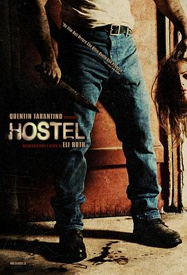

人皮客栈 / Hostel
又名：杀人欲室(港) / 恐怖旅舍(台) / 旅社 / 客栈 / Hostel: Part I
作品信息
| 导演 | 伊莱·罗斯 |
| 编剧 | 伊莱·罗斯 |
| 主演 | 杰伊·埃尔南德斯 / 德里克·理查德森 / 提托耳·古德乔森 / 芭芭拉·尼德尔加科娃 / 扬·弗拉萨克 / Jana Kaderabkova / 詹尼弗·林 / Keiko Seiko / Lubomír Bukový / Jana Havlickova / 里克·霍夫曼 / Petr Janis / 三池崇史 / Patrik Zigo / Milda Jedi Havlas / 马丁·库巴卡克 / 米罗斯拉夫·塔博尔斯基 / Daniela Bakerová / 菲利普·韦利 / 马克·泰勒 / Sandy Style / 大卫·巴克萨 / 加布里埃尔·罗斯 / 克里斯托弗·艾伦·尼尔森 / 姿娜 / Ashley Robbins / Anita Queen / Klara Smetanova / Katrina Henesova / 安妮·贝格斯特德·乔丹诺娃 / Martin Faltyn / 伊莱·罗斯 / Karel Vanásek |
| 类型 | 恐怖 |
| 制片国家/地区 | 美国 / 捷克 |
| 语言 | 英语 / 捷克语 / 德语 / 荷兰语 / 斯洛伐克语 / 日语 / 冰岛语 / 俄语 / 西班牙语 |
| 上映日期 | 2005-09-17(多伦多电影节) |
| 片长 | 94 分钟 |
| IMDb | tt0450278 |
说过什么
2022-10-30 05:26:42
广播 · 想看
最后一次看到是 2026-08-01T11:08:18+10:00 · 豆瓣原页